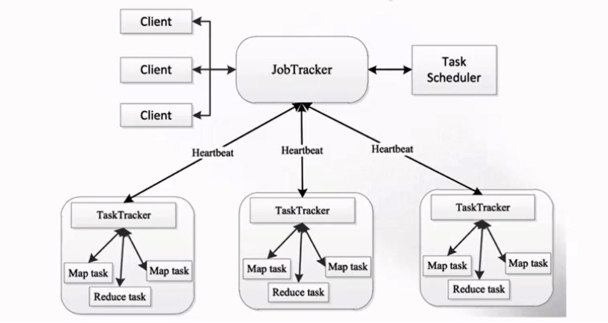
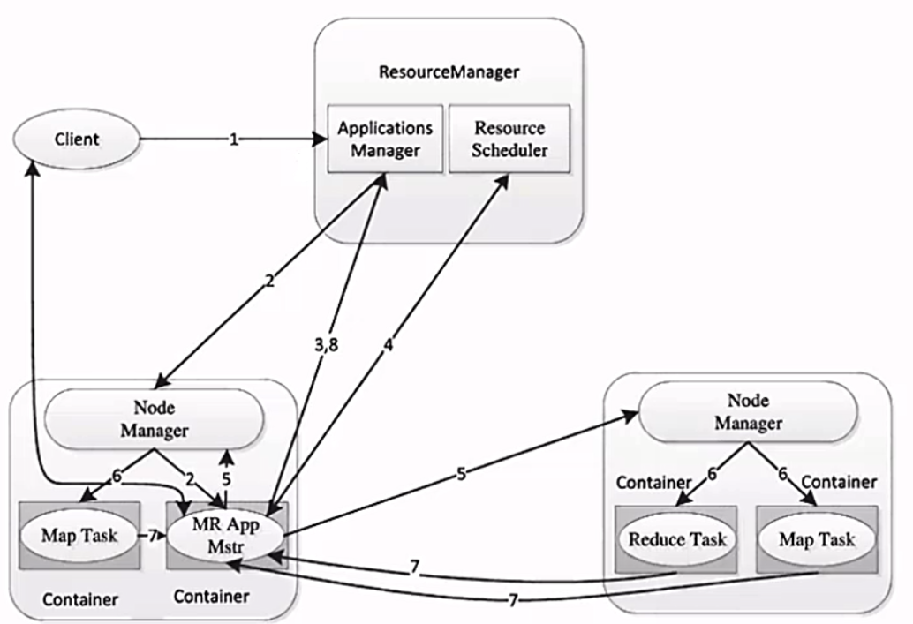
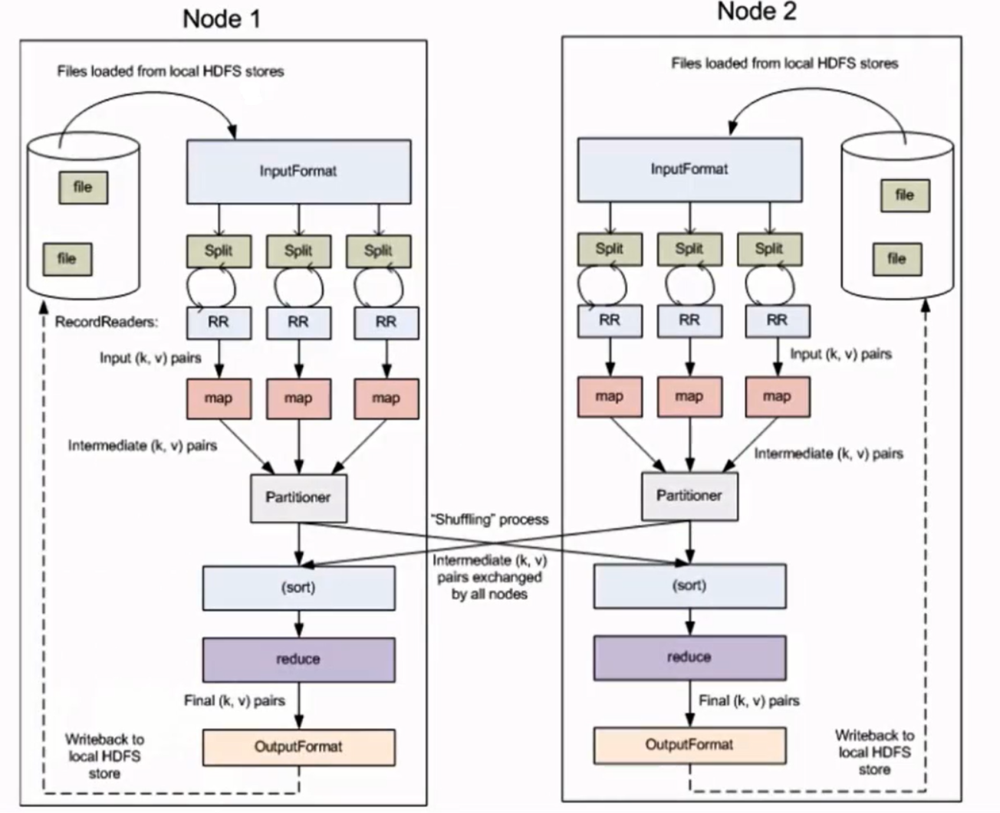
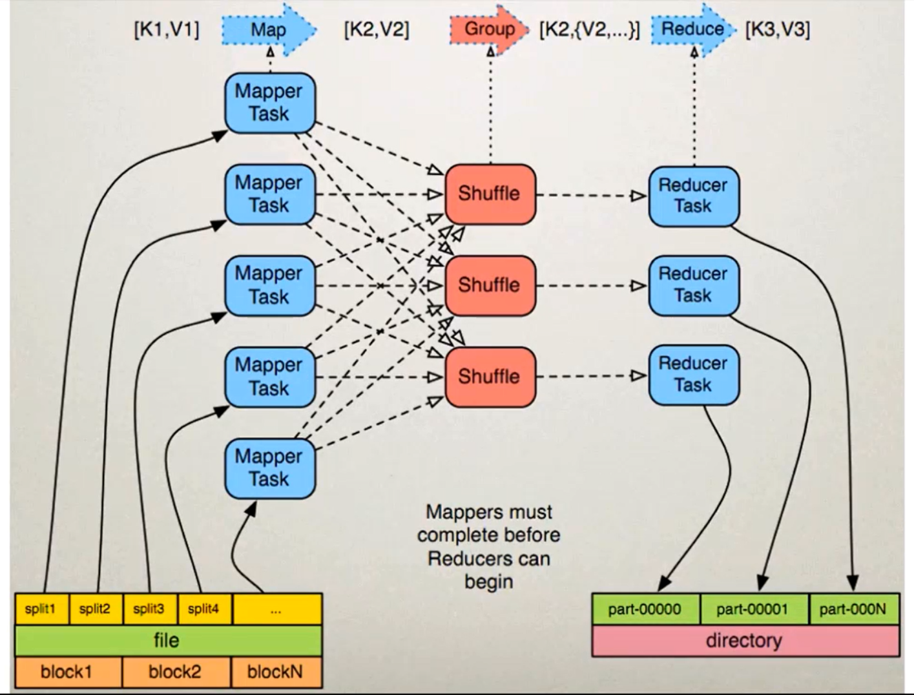
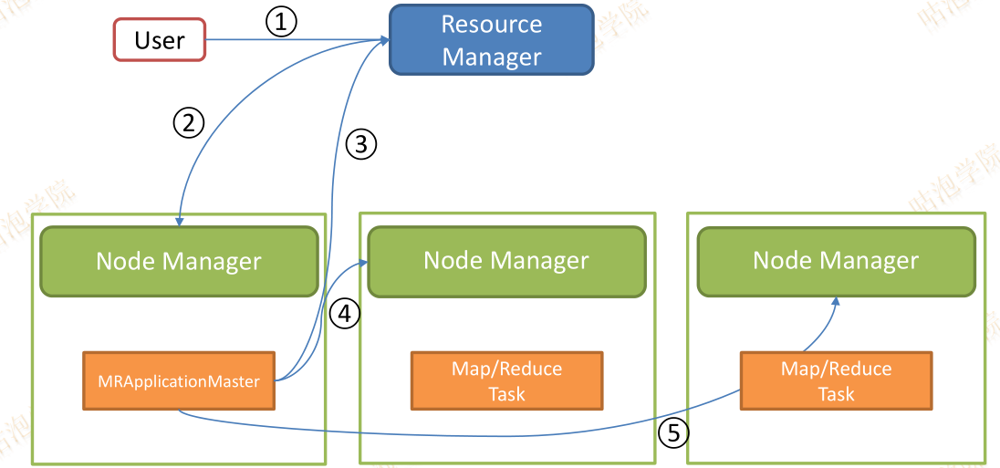
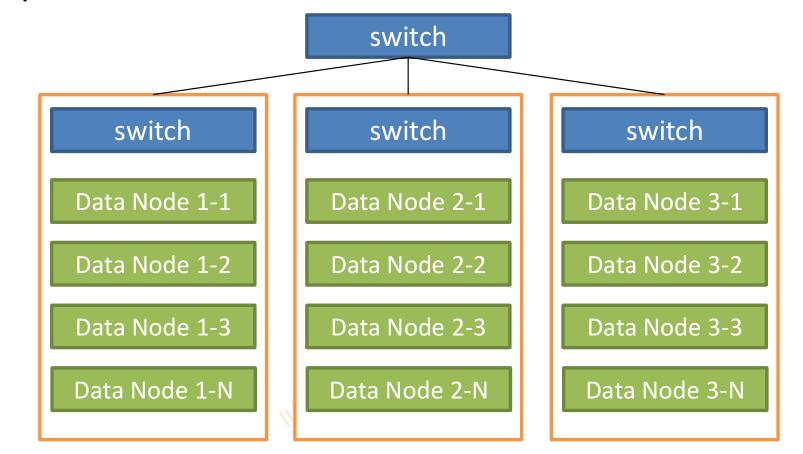
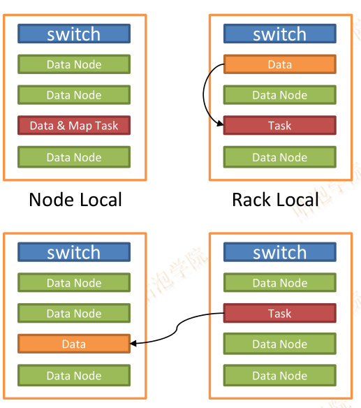
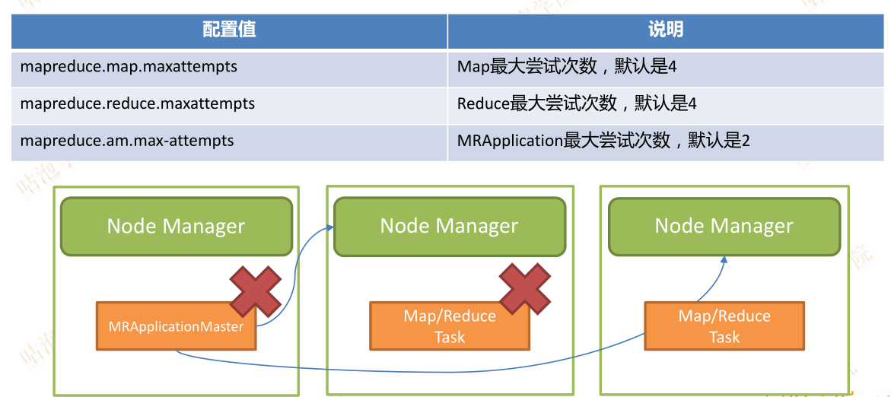
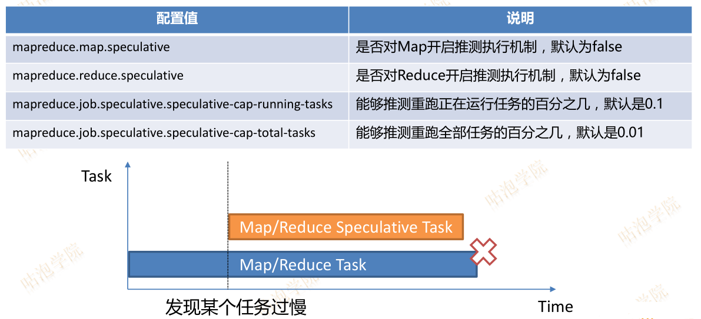
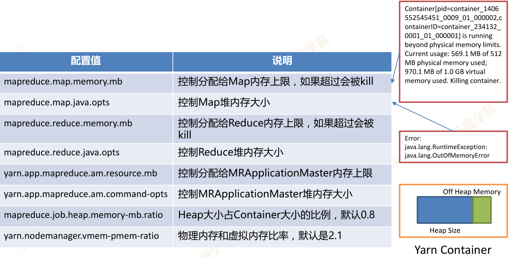

MapReduce1架构

JobTracker: JT
作业的管理者 (管理的)
将作业分解成一堆的任务：Task（MapTask和ReduceTask）
将任务分派给TaskTracker运行
作业的监控、容错处理（task作业挂了，重启task的机制）
在一定的时间间隔内，JT没有收到TT的心跳信息，TT可能是挂了，TT上运行的任务会被指派到其他TT上去执行
TaskTracker: TT
任务的执行者 (干活的)
在TT上执行我们的Task（MapTask和ReduceTask）
会与JT进行交互：执行/启动/停止作业，发送心跳信息给JT
MapTask
自己开发的map任务交由该Task出来
解析(比如空格或者tab键分割)每条记录的数据，交给自己的map方法处理
将map的输出结果写到本地磁盘（有些作业只仅有map没有reduce==>HDFS）
ReduceTask
将Map Task输出的数据进行读取
按照数据进行分组传给我们自己编写的reduce方法处理
输出结果写到HDFS
MapReduce2架构

MapReduce执行流程
准备map处理的输入数据
Mapper处理
Shuffle
Reduce处理
结果输出


Split：交由MapReduce作业来处理的数据块，是MapReduce中最小的计算单元
HDFS：blocksize 是HDFS中最小的存储单元 128M
默认情况下：他们两是一一对应的，当然我们也可以手工设置他们之间的关系（不建议）
InputFormat：
将我们的输入数据进行分片(split): InputSplit[] getSplits(JobConf job, int numSplits) throws IOException;
TextInputFormat: 处理文本格式的数据
OutputFormat: 输出
Combiner
Partitioner
MapReduce on Yarn

MapReduce编程WordCount案例
1 | package com.kun.hadoop.mapreduce; |
使用IDEA+Maven开发wc：
1）开发
2）编译：mvn clean package -DskipTests
3）上传到服务器：scp target/hadoop-train-XXX.jar
4）运行
hadoop jar /home/hadoop/lib/hadoop-train-1.0.jar com.kun.hadoop.mapreduce.WordCountApp hdfs://hadoop:9000/hello.txt hdfs://hadoop:9000/output/wc
注意：
相同的代码和脚本再次执行，会报错
security.UserGroupInformation:
PriviledgedActionException as:hadoop (auth:SIMPLE) cause:
org.apache.hadoop.mapred.FileAlreadyExistsException:
Output directory hdfs://hadoop:9000/output/wc already exists
Exception in thread “main” org.apache.hadoop.mapred.FileAlreadyExistsException:
Output directory hdfs://hadoop:9000/output/wc already exists
在MR中，输出文件是不能事先存在的
1）先手工通过shell的方式将输出文件夹先删除
hadoop fs -rm -r /output/wc
2) 在代码中完成自动删除功能: 推荐大家使用这种方式
在main中的//创建Configuration下面加入
// 准备清理已存在的输出目录
1 | Path outputPath = new Path(args[1]); |
MapReduce 容错性
- Case 1. 如果Task运行失败
- Map Task失败
- MRAppMaster重启Map Task，Map Task没有依赖性
- Reduce Task失败
- MRAppMaster重启Reduce Task，Map Task的输出保存在磁盘上
- 同一个Task运行多次失败（默认4次）则本次作业失败
- Map Task失败
- Case 2. 如果Task所在的Node节点挂了
- 在另外一个节点上重启所有在挂掉节点上曾经运行过的任务
- Case 3. 如果Task运行缓慢
- 通常由于硬件损坏、软件Bug或者配置错误导致
- 单个task运行缓慢会显著影响整体作业运行时间
- 解决方案：推测执行
- 在另外一个节点上启动相同的任务，谁先完成就kill掉另外一个节点上的任务
- 无法启动推测执行的情况：写入数据库
MapReduce 数据本地性问题
- 在集群中网络资源是一种稀缺资源
- 文件在HDFS上存储在不同的DataNode节点上
- 如果Map Task任务从远程机器上拷贝数据会消耗大量的网络带宽

- HDFS上同一份文件会有多份拷贝（默认是3份）
- MapReduce调度原则
- 在包含副本的节点上启动Map Task任务
- 或者在就近的节点上启动Map Task任务
- 因此数据本地性有三个级别
- Node Local
- Map Task和数据在同一个节点上
- Rack Local
- Map Task和数据在同一个机架上
- Different Rack
- Map Task和数据即不再同一个节点又不在同一个机架上
- Node Local

参数调优-Task数目调整
Map Task数目
- Map读取文件时，通过InputFormat计算分割文件
- split大小由以下三个参数决定
- dfs.blocksize HDFS Block大小
- mapreduce.input.fileinputformat.split.minsize 划分最小字节数
- mapreduce.input.fileinputformat.split.maxsize 划分最大字节数
- 计算公式Reduce Task数目
1
2
3protected long computeSplitSize(long blockSize, long minSize, long maxSize) {
return Math.max(minSize, Math.min(maxSize, blockSize));
}
- 默认每个作业Reduce Task数目可以通过mapreduce.job.reduces控制
- 在每个作业中也可以通过Job.setNumReduceTasks(Int number)进行控制
参数调优-容错参数调整

推测执行参数调整

内存参数调整
